Plataforma institucional para la Dirección General de Salud Ambiental. Integra un portal público informativo y una Intranet privada. Desarrollado (2021-2023) para un entorno de servidor local On-Premise y entregado al departamento de informática para su implantación.
Sitio web público orientado a la ciudadanía. Actúa como el canal de difusión oficial de la institución.
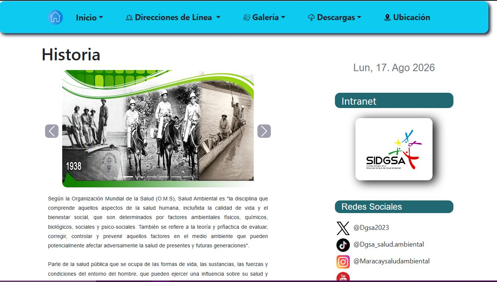
Sistema de mesa de ayuda interno para los funcionarios de la institución.
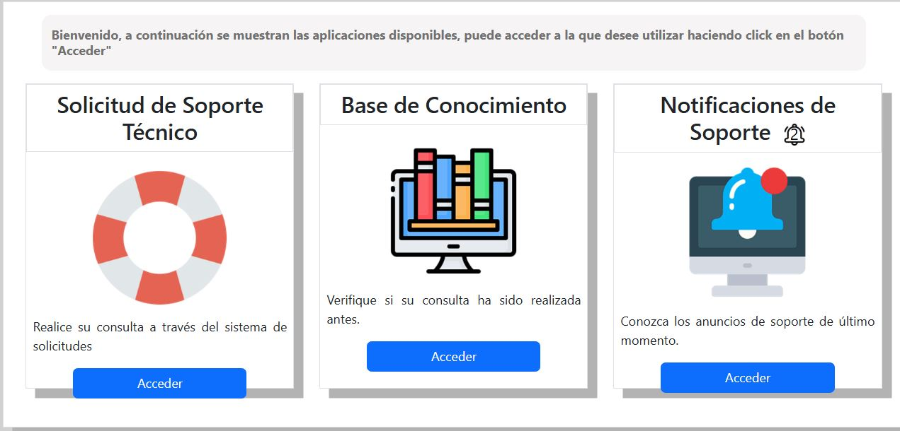
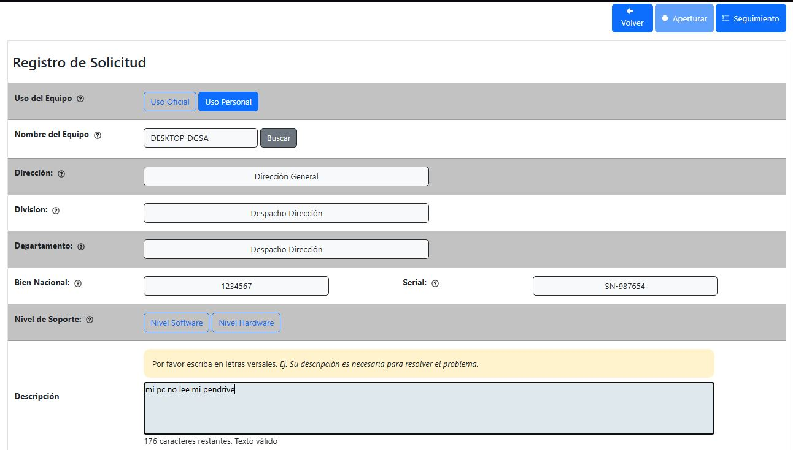
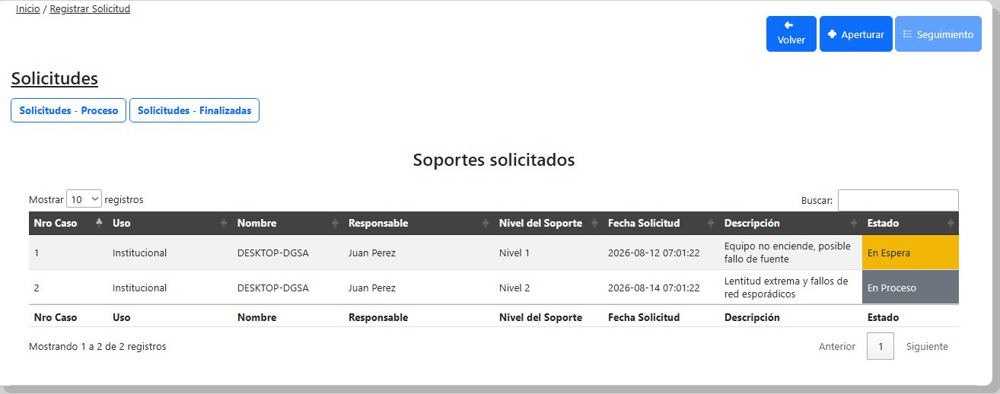
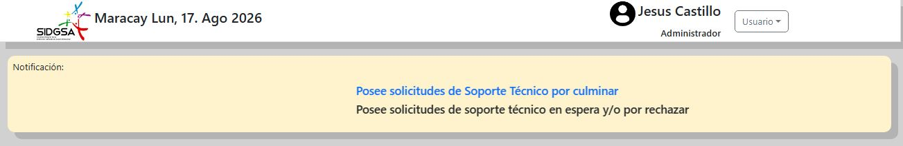
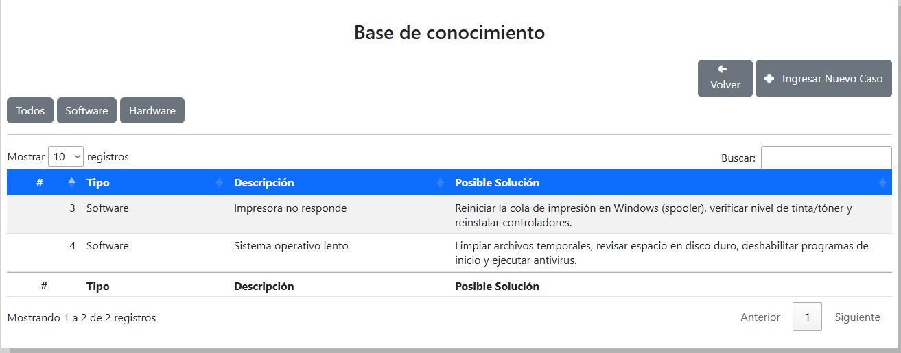
Sistema de control de inventario de hardware y equipos informáticos de la institución.
Problema: Control de todo el inventario de hardware de la institución se llevaba manualmente en papel y archivos aislados, haciendo imposible la auditoría rápida y aumetando la pérdida de información.
Solución: Digitalización total del inventario e implementación de DataTables, procesando las consultas pesadas directamente en la base de datos.
Resultado: Manejo fluido de grandes cantidades de datos centralizados con tiempos de respuesta de milisegundos, permitiendo auditorías de hardware en tiempo real.
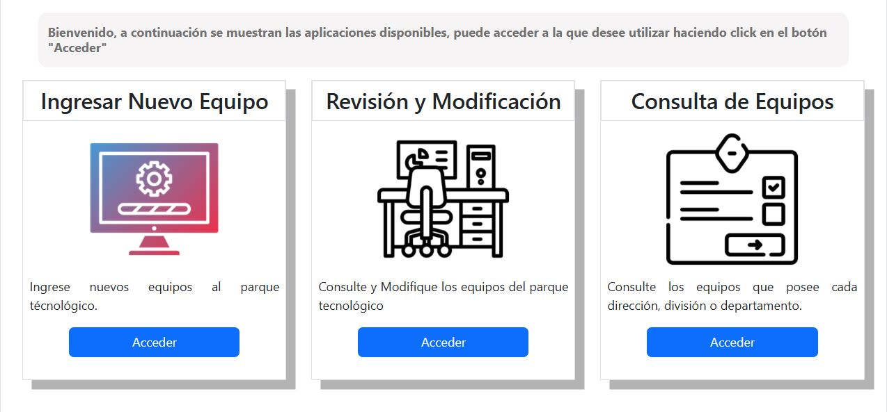
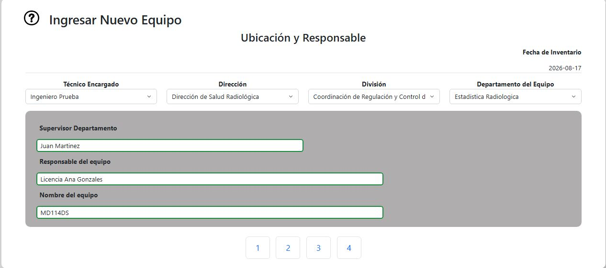
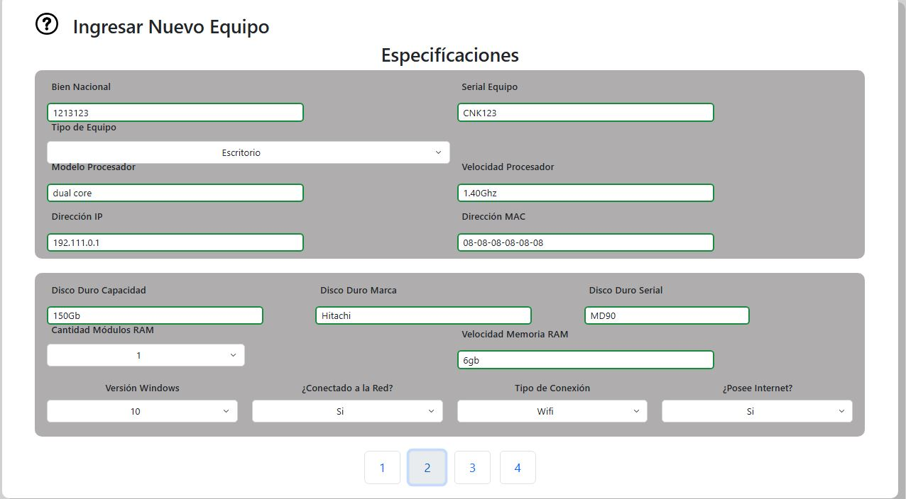
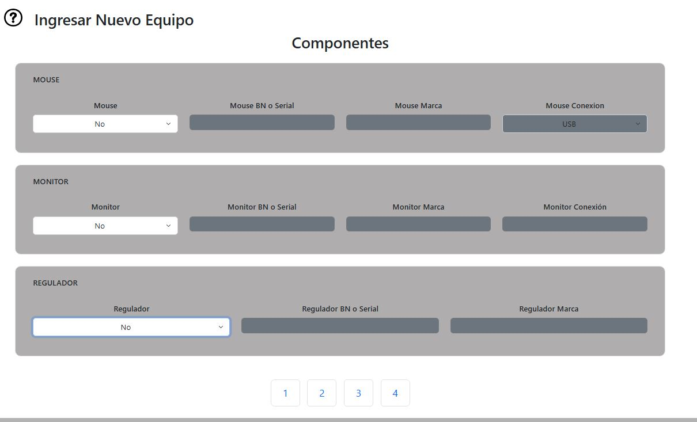
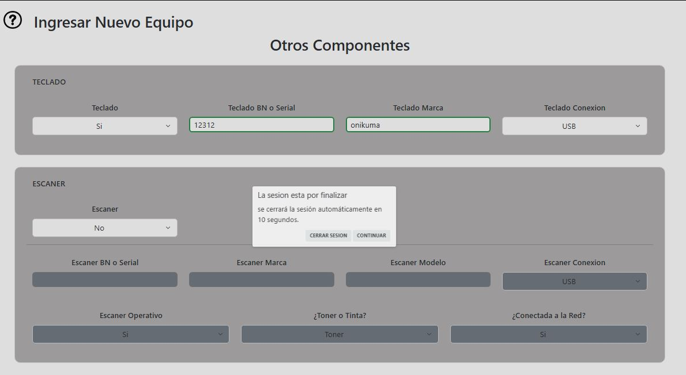
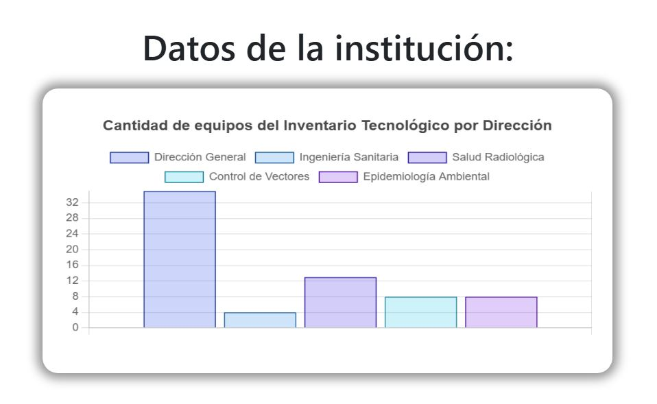
Flujo digital para la recepción y derivación de documentos institucionales entre departamentos.
Propósito: Notificar proactivamente a las distintas direcciones sobre la correspondencia entrante o enviada. El sistema alerta si los documentos fueron enviados a su oficina o si el personal debe dirigirse al departamento de correspondencia a retirarlos físicamente, agilizando el flujo de información.
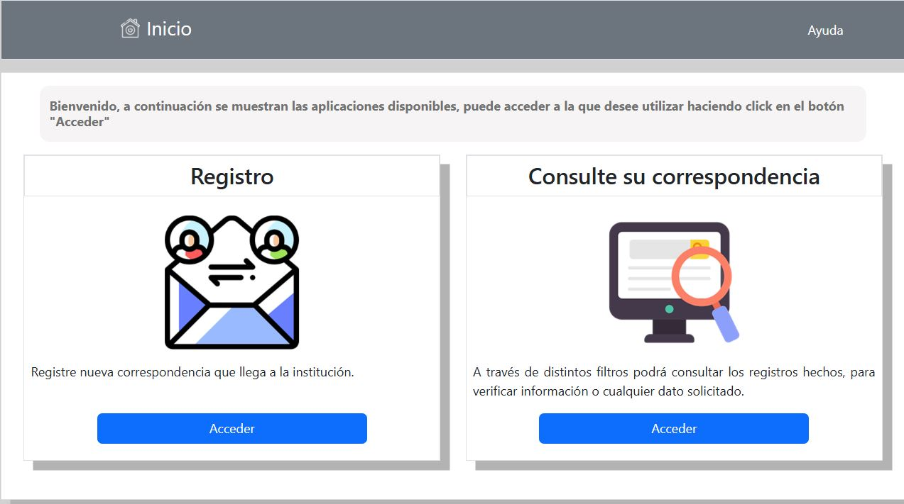
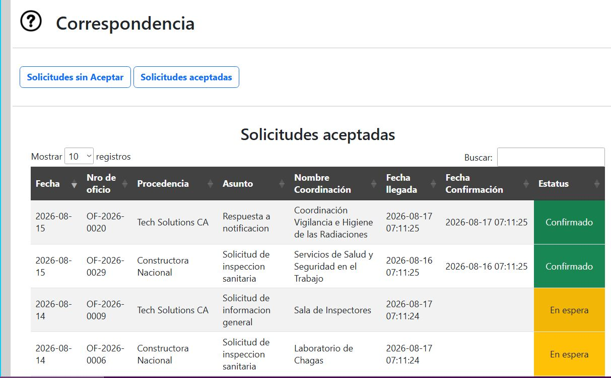
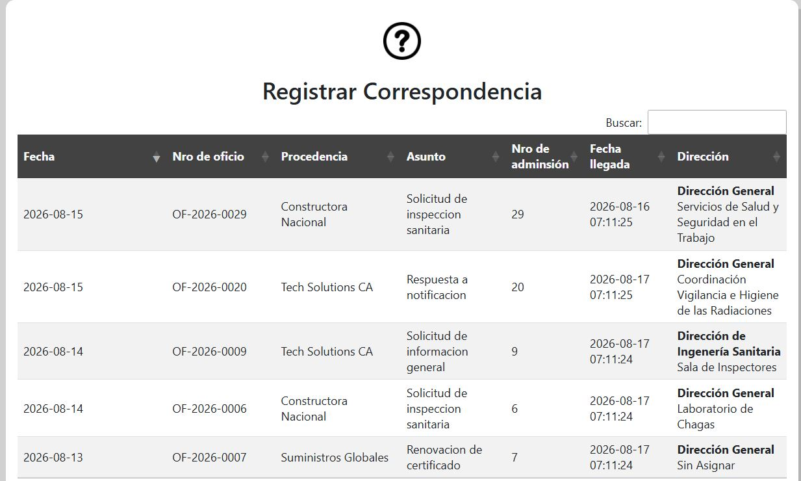
Panel de administración global y seguridad de la Intranet.
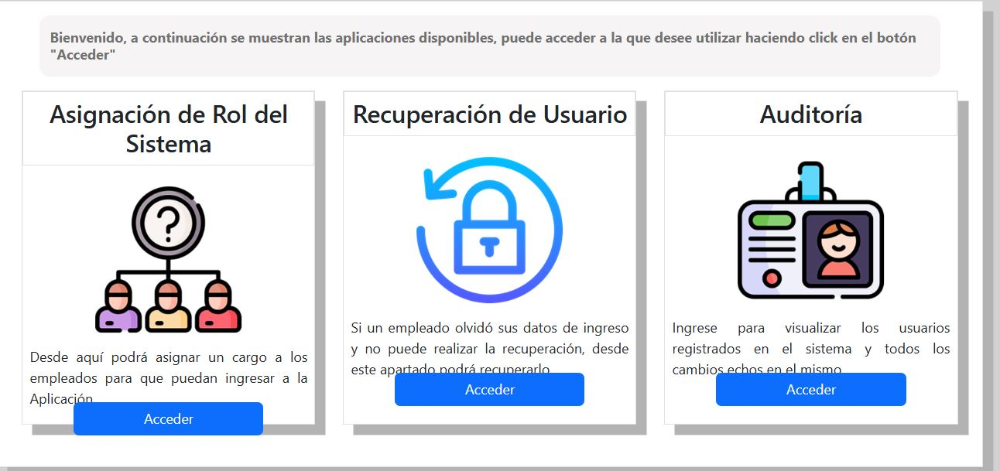
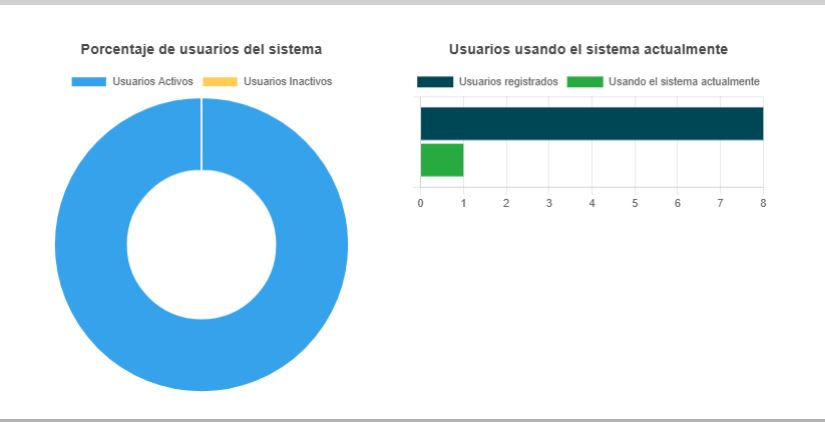
Sistema de Gestión de Contenidos integrado que alimenta dinámicamente el Portal Público.
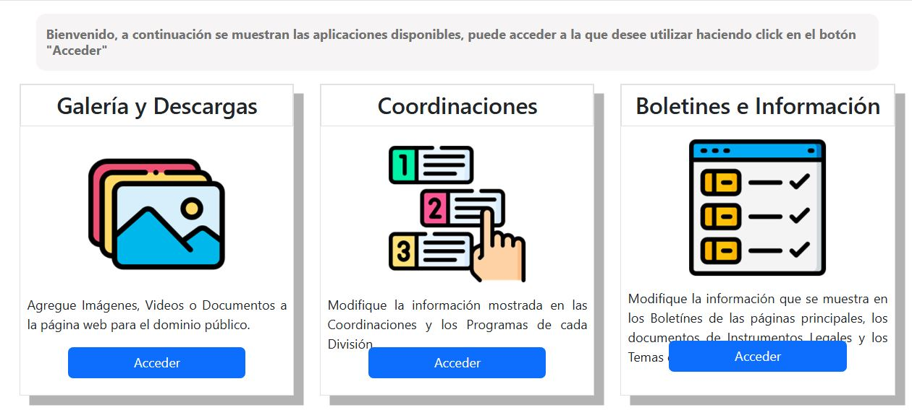
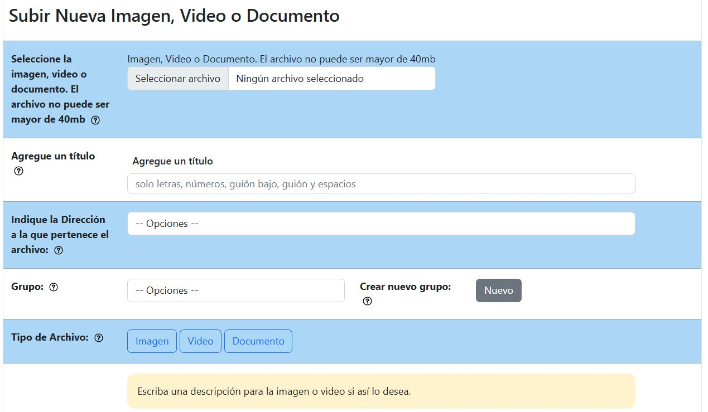
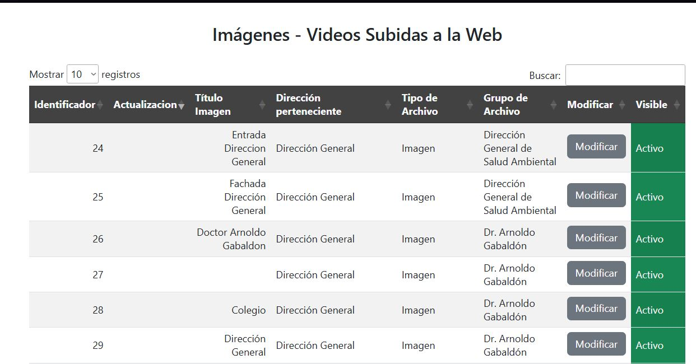
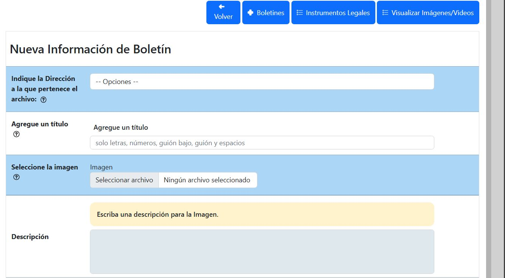
Conoce más sobre mi trabajo o explora otros casos de estudio en mi portafolio.